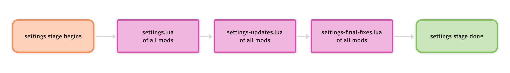
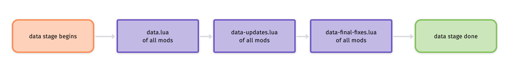
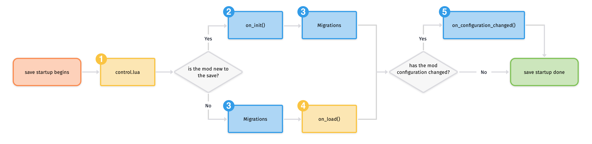

Factorio Auxiliary DocsVersion 2.0.55 
Data lifecycle
Factorio allows mods to run their code at two distinct points: At game startup, and while a map is actively being played. These stages have different rules and constraints, which are explored separately below. Note that while mods run continuously during a gameplay session, the save startup phase is particularly relevant for a proper understanding of the data lifecycle.
A mod's files need to be structured in a specific way for the game to pick up on them. While each stage description below mentions which files it is looking for, the wiki has a general overview of what a mod's file structure should look like.
The game gives all active mods an order that takes into account their dependencies first and their internal names second. This order determines the load sequence of mods at game startup, as well as the order in which events are sent during runtime. Specifically, the depth of each mod's dependency chain is taken into account first, sorting the shorter ones to the front of the queue. For mods with identical chain depths, the natural sort order of their internal names then determines the definitive ordering.
Note that Instrument Mode may be enabled for a single mod to inject code for mod development tools, which impacts the data lifecycle for that mod.
Game startup
When Factorio is launched, it proceeds to load all the prototypes and assets that it and any active mods require. Two parts of this process are relevant to mods: The settings stage and the prototype stage. They are very similar in structure, so the following instructions apply to both.
For either stage, a single shared Lua state is created that is used to run three specific files for every mod. First, each mod's "stage.lua" file is run according to the usual sequence, then each mod's "stage-updates.lua" is run, after which each mod's "stage-final-fixes.lua" is run. This way, every mod gets the chance to add new prototypes or modify existing ones. These consecutive 'rounds' allow a mod to influence other mods' prototypes without necessarily needing to rely on dependencies for load order. Changes to prototypes during either stage are tracked and a history of which mod has changed which prototype is recorded by the game.
During these stages, no actual game instance exists, and the standard Lua API is not available. Instead, several global Lua variables are provided. Most notably, a data table that collects all the prototypes that are being created. It expects a specific format for each kind of prototype. Missing properties will either fall back to a default value or give an error that indicates what is missing. Extra properties that the game isn't looking for are ignored.
In addition to the data table, the game provides the mods table which contains a mapping of mod name to mod version for all enabled mods. It can be used to adjust a mod's functionality depending on which other mods are active alongside it.
After a stage's three 'rounds' have finished, the shared Lua state is discarded, meaning no variables or functions defined in it will carry over. Any properties the game wasn't looking for are discarded.
Settings stage

The settings stage runs through settings.lua, settings-updates.lua and settings-final-fixes.lua in the manner explained above, allowing mods to add all the mod setting prototypes they need. The format for these is documented on the wiki.
At the end of this stage, the settings prototypes are constructed and the player's settings are read from their "mods" directory's "mod-settings.dat" file.
Prototype stage

The prototype (or data) stage runs through data.lua, data-updates.lua and data-final-fixes.lua in the manner explained above, allowing mods to add all the non-setting prototypes they need. The format for these is documented in the prototype API docs.
During the prototype stage, the game provides a special global settings variable which is populated with all the startup mod settings that were loaded at the end of the settings stage. Note that settings prototypes can no longer be modifed.
At the end of this stage, all prototypes are constructed and the game goes to the main menu.
Save startup
The control stage begins as soon as a player starts a new game or loads a save, and lasts for the duration of that save. It allows mods to continuously influence the state of a running game in a variety of ways. Note that prototypes can no longer be modified, and the global data variable is no longer accessible.
The control stage is documented in the runtime docs.
At the very start of the control stage, the game goes through a series of steps, each with their own purpose and rules, before a save is considered to be fully loaded and running. Note that at every step, each mod's code is run according to the usual sequence.

This diagram shows the steps an individual mod goes through, including two points in time (indicated by the diamond-shaped nodes) where one of two paths is taken by a mod depending on certain conditions. Note that while not every mod necessarily goes through the same steps, any step is run for all appropriate mods before moving on to the next one. The numbering of the nodes in the diagram mirror the order of these steps.
The first fork depends on whether a mod is considered new to the save or not. A mod is considered new to the save either when the player starts a new save with the mod enabled, or when the mod is added to an existing game that it hasn't been a part of previously. Note that adding a control.lua file to an existing mod is treated as that mod being newly added. If the mod is new, its on_init() handler will first be run, after which any applicable migrations are run. Its on_load() handler will not be run. If a mod is not new however, any applicable migrations will be run, after which its on_load() handler will be run. Its on_init() handler will not be run.
The second fork depends on whether the mod configuration has changed. The configuration is considered to be different when the game version or any mod version changed, when any mod is added or removed, when a startup setting has changed, when any prototypes have been added or removed, or when a migration was applied. This is mod-agnostic, meaning the on_configuration_changed() handlers will either be run for every active mod, or for none of them.
Note that when downloading the save file to connect to a running multiplayer session, the answer to the diamond-shaped nodes will always be "No", and all migrations will have been applied previously. Because of this, effectively only steps 1 (control.lua) and 4 (on_load()) (marked yellow in the diagram) will run. They should be used to make sure the joining player's Lua state is identical to that of the existing players' state. This mostly means making sure event registrations are identical, especially if conditional registrations are used.
The following sections about the individual steps presuppose an understanding of storage. After all the relevant steps have been executed, the save is considered fully setup and running. Access to all API objects will be available in any event handler.
[1] control.lua
During this step, each mod's control.lua file is loaded and executed in their own Lua state that will be owned by them for the remainder of the play session. It allows a mod to register for events using the script object, register remote interfaces with the remote object, or register custom commands with the commands object.
Access to the game and rendering objects is not available as the game state can not be manipulated at this point. While each mod has their own storage table, it is not restored from the save file until just before on_load. It is discouraged to initialize storage during this step, as on_init should be used instead.
Since this step is run every time a save file is created or loaded, it is not necessary to restart the game for changes to the control.lua file to take effect. Restarting or reloading a save will re-run this step and pick up any modifications to the code.
[2] on_init()
This step is only run when starting a new save game or for mods that are new to an existing one. During it, their LuaBootstrap::on_init handler is called to give the mod the chance to set up initial values that it will use for its lifetime. It has full access to the game object and its storage table and can change anything about the game state that it deems appropriate.
Note that scenario scripts are treated like mods for this step. Also, no other events will be raised for a mod or scenario until it has finished this step.
[3] Migrations
During this step, the game automatically runs the migrations that each mod includes and that haven't been applied to the save previously. To that end, saves will remember the file names of the migrations that have already been applied to it, and thus won't run any migration more than once.
Migrations are run in their mod's Lua state and have full access to the game state. If a mod doesn't have a control.lua file and thus no runtime Lua state, the game creates a temporary Lua environment to run the migrations in, which is discarded afterwards.
First, all JSON migrations are run which allow changing one prototype into another, typically when renaming them. Then, all Lua migrations are run, allowing mods to adjust the game state as necessary after recipes or technologies have changed.
Note that when connecting to a running multiplayer session, migrations will not be run, since they will already have done so when starting the multiplayer server. The save file a joining player downloads is thus already migrated.
[4] on_load()
This step runs for every mod that has been a part of the save previously, including when loading a save to connect to a running multiplayer session. During it, the mod's LuaBootstrap::on_load handler is called. It gives the mod the opportunity to rectify potential differences in local state introduced by the save/load cycle. Doing anything other than the following three will lead to desyncs, breaking both multiplayer and replays. Access to the game object is not available. The storage table can be accessed and is safe to read from, but not write to, as doing so will lead to an error.
The only legitimate uses of this step are these:
- Re-setup metatables not registered with LuaBootstrap::register_metatable, as they are not persisted through the save/load cycle.
- Re-setup conditional event handlers, meaning subscribing to an event only when some condition is met to save processing time.
- Create local references to data stored in the storage table.
For all other purposes, LuaBootstrap::on_init, LuaBootstrap::on_configuration_changed or migrations should be used instead.
Note that no other events will be raised for a mod until it has finished this step.
[5] on_configuration_changed()
This step runs for all mods if the save's mod configuration has changed. The configuration is considered to be different when the game version or any mod version changed, when any mod was added or removed, when a startup setting has changed, when any prototypes have been added or removed, or when a migration was applied.
During it, their LuaBootstrap::on_configuration_changed handler is called, allowing them to make changes or adjustments to their internal data structures. To that end, storage can be accessed and modified at will. Mods also have full access to the game object, enabling any change to the game state that they deem appropriate.
Note that when connecting to a running multiplayer session, this event will not be called, since it will already have done so when starting the multiplayer server. The save file a joining player downloads is thus already up-to-date.
General Topics
- Data Lifecycle
- Storage
- Migrations
- Libraries
- Prototype Inheritance Tree
- Noise Expressions
- Instrument Mode
- Item Weight
JSON Docs
Defines

- alert_type
- behavior_result
- build_check_type
- build_mode
- cargo_destination
- chain_signal_state
- chunk_generated_status
- command
- compound_command
- control_behavior
- controllers
- deconstruction_item
- default_icon_size
- difficulty
- direction
- disconnect_reason
- distraction
- entity_status
- entity_status_diode
- events
- flow_precision_index
- game_controller_interaction
- group_state
- gui_type
- input_action
- input_method
- inventory
- logistic_member_index
- logistic_mode
- logistic_section_type
- mouse_button_type
- moving_state
- print_skip
- print_sound
- prototypes
- rail_connection_direction
- rail_direction
- rail_layer
- relative_gui_position
- relative_gui_type
- render_mode
- rich_text_setting
- riding
- robot_order_type
- rocket_silo_status
- selection_mode
- shooting
- signal_state
- space_platform_state
- target_type
- train_state
- transport_line
- wire_connector_id
- wire_origin
- wire_type